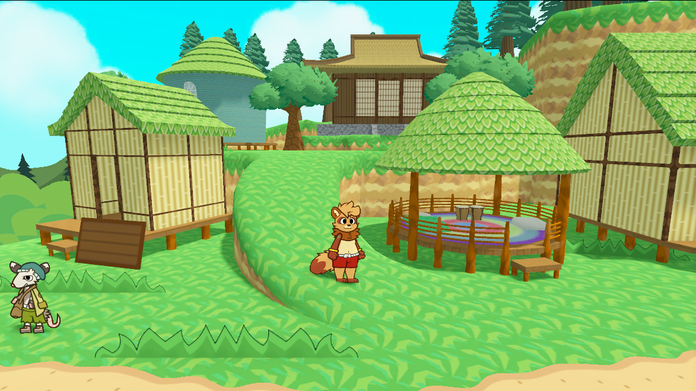
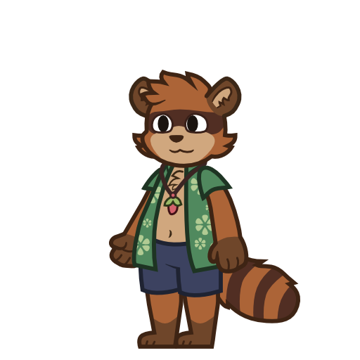

summer status ow
game state
the game's still in active development, not dead or on hiatus. instead of spending forever looking for an artist, i decided to just get better at my own character design and modeling. that's made everything go way faster. i've been making new sprites, models, and designs really quickly. they might not be amazing art, but i feel so much less stressed about the visuals now. i've also actually found an artist who's thinking about helping out, but it's not a sure thing yet. about the music, i'd share it, but i feel it's best enjoyed when you're actually in the game. anyway, here's some preview pics


why the long wait?
what really slowed things down and led to burnout was how incredibly tedious and slow it was to make characters, models, and sprite animations. also, the original game release was meant to be a simple prototype or demo just to test things out and get feedback, not a full release. i've since found much more efficient ways to do things. for sprites, i used to have constant issues with weird-looking legs in spine. i've fixed this by making the torso and one leg part of the same image and carefully weight painting the 2d mesh to keep deformations minimal. i also realized how much my habit of avoiding references held me back, and i'm finally using them effectivelyfor 3d modeling, my old process took forever. i'd originally try to make everything one huge, welded mesh, then i'd meticulously uv wrap everything. any change meant redoing all that uv wrapping. but now, i'm completely skipping uv wrapping and using tri-planar mapping. this technique, often seen in sandbox games, makes textures look consistent on all shapes, has no distortion, and is incredibly fast. plus, instead of trying to make one huge combined model, i now work on individual parts like walls, supports, and roofs. this makes everything more modular and much easier to modify. it's more like building with legos rather than waiting hours for a 3d print to finish
tl;dr: i burnt out, but came back more efficient (the village scene in the preview was modelled with the old method and took forever to make)
why barely any social media posts?
i'm honestly pretty uncomfortable with social media and just don't want to deal with it. i know it feels bad to leave most of you in the dark, and i don't want to be like hytale, who went radio silent then just dropped their game. i'll really try my best to post more often. i don't want updates to only be on my weird blog site. i appreciate all the feedback, and i'm truly sorry for basically disappearing after the first demo came outexpected nsfw content
for the sake of the project scope, nsfw scenes will be visual novel styled graphics with text. good nsfw sprite animations are way out of my league. animating the scenes are something i hope to do in the future, but i can't promise anythingthe game will involve kinks like hyper (not car sized bits), hypnosis, vore, bondage, and dubious consent. i fully intend on keeping dubious consent especially since it's a common kink i've seen in tons of furry nsfw games ex.) TiTs/CoC, Oh So Hero, Game Over. i'm open to adding more kinks, but i'm not removing the ones already listed
i'm really sorry. i definitely should have given a heads-up beforehand. once the update for the prologue and early chapter 1 is out, it'll include warnings and an option to disable extreme kinks
itch.io and other platforms
despite the recent nsfw + lgbt shadow ban on itch.io, i'm not too upset or worried. most games will probably get indexed again, just with more limitations from the karen payment processors. below is how notf will be distributed moving forward:itch.io
on itch.io, NOTF chapter 1 will be free when it fully releases. later chapters will cost money, and any itch.io versions might have content cut or limited due to platform guidelines
steam
the steam release will more than likely be the same as the itch.io section. chapter 1 will be a free demo, while the full release will cost money, but with cut content according to any platform guidelines
github
every version of chapter 1 will also have an alternate download in a github release, and these will all be uncut unlike the itch.io versions. it's a safe spot to host, and getting it from there will be just as easy as on itch.io
subscribestar
on subscribestar, you'll be able to access the full, uncensored versions of all chapters. this platform is the place to go if you want the complete, uncut game, and it will also include early access releases
personal issues
like many developers, i struggle with impostor syndrome. despite knowing what it is, i can't always shake the feeling, sometimes even comparing myself to yandev, though i know my codebase isn't nearly as problematic. i often feel guilty about using vector art, even when created from scratch, or relying on puppet animation for all sprites. generally, a sense of guilt frequently seeps in while working on this gamei also need to address the wide reworking of the game's writing and story. i'm still finding it challenging to structure story beats and ensure the overall game progression flows well. my main goal is to prevent the game from ending up with terrible pacing and uninteresting dialogue. any feedback and constructive criticism on chapter 1's story, pacing, or dialogue would be greatly appreciated, though it's important to note i'd prefer not to change too much of the game's original vision. i might also host a q&a session on discord after the new update is released
finally, i'm deeply disappointed by how long it's taken to release a new game update. while new content has been added since the demo, it never felt like enough. the severe burnout, coupled with occasional depressive episodes, certainly didn't help. i sincerely apologize for making you all wait so long
7/24/2025